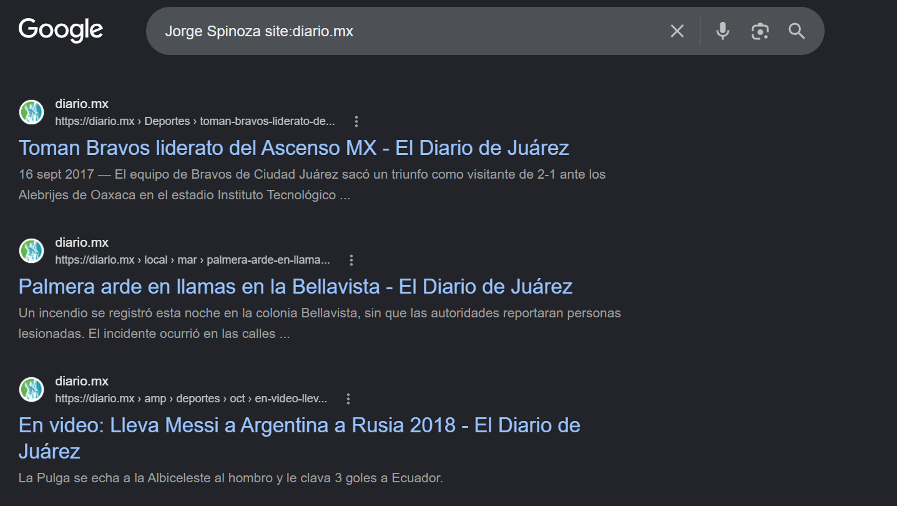
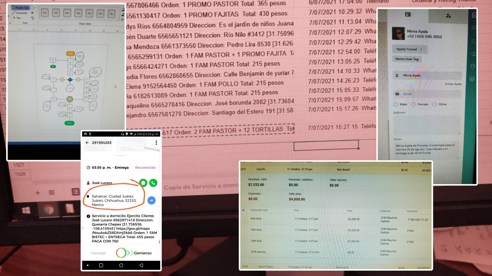
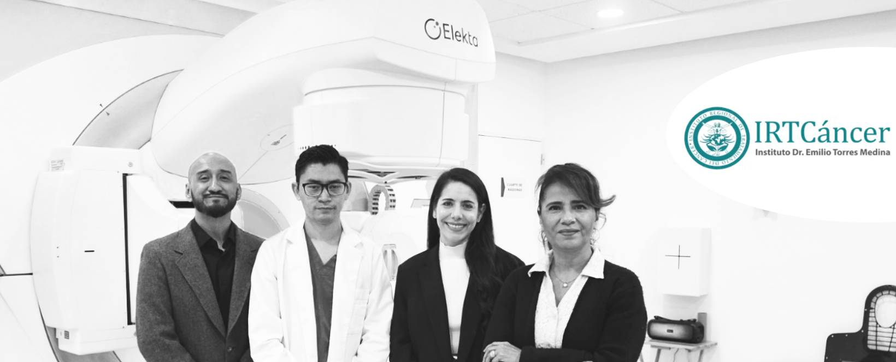

Jorge Spinoza - Portfolio
.png){kind=link}
I transform language into a business tool.
I combine a background in linguistics and editorial experience with digital commerce and applied artificial intelligence, i.e. prompt engineering, conversational systems, and human-in-the-loop models to create content, scripts, and communication strategies that not only read well, but also drive results: more sales, greater clarity, and stronger connections with the right audience.
I create videos, content, and design.
My career bridges three worlds that are usually separate:
Editorial — As a digital editor at diario.mx, I learned to think in terms of real audiences: which stories matter, how they are told, and what keeps someone reading until the end.
Commercial — At Taco H, I didn't stop at answering WhatsApp messages: I built a digital sales business unit from scratch, translating conversation into conversion and proving that well-applied language also sells.
Strategic — At IRTCáncer, as a public relations and communications assistant, I was in charge of marketing content, closing the loop between institutional narrative, reputation, and measurable results.
💼 Projects
– Diario.mx –
{kind=link}
During this period, I contributed to growing the digital audience of diario.mx from 250,000 to 500,000 followers between 2014 and 2018, doubling reach through a planned strategy and content experimentation, while directing front-page editorial decisions for the region's leading news outlet, setting the daily community agenda, and defining the visual and narrative hierarchy across digital formats; this work also included brand reputation management during high-volatility news cycles, maintaining audience trust in sensitive situations, and coordinating international content workflows under The New York Times editorial standards, ensuring intercultural accuracy and professional publishing quality.
{kind=link}

A small sample of my viral articles (which I used to sign in the 2010s when it was uncommon) can be found on the gluc.mx portal.
– Taco H –
{kind=link}
In this experience, an unprecedented WhatsApp sales channel was created from scratch for the company, eventually representing 30% of total weekly revenue ($350,000 MXN) and establishing itself as a steady digital revenue stream; in parallel, I designed and implemented a comprehensive omnichannel operational architecture across 3 locations, integrating orders, logistics, and delivery into a single coordinated system with 100% process accuracy, while supervising sales, logistics, and delivery teams operating simultaneously across multiple locations with weekly revenues of $350,000 MXN, and restructured the customer journey through behavioral data analysis, reducing conversion friction and measurably increasing repeat purchases.
{kind=link}

– Regional Institute for Cancer Treatment –
{kind=link}

For this project, I designed authority positioning strategies for healthcare professionals, aiming to drive patient acquisition and increase private practice revenue through systematic branding and prospecting frameworks; this effort was supported by building a referral and partnership network with medical specialists and healthcare clusters across the US-Mexico border, structuring agreements and defining value exchange between providers, alongside managing a $250,000 MXN budget for the execution of the 25th-anniversary ceremony, optimizing line items and negotiating with vendors without compromising event quality, as well as overseeing and approving marketing copy and communication pieces to ensure message consistency and brand alignment across all campaigns.

- Turban Workshop – Cancer Survivor IRTCáncer
About a turban workshop for oncology patients, managed in collaboration with Cancer Survivor.

- A Milestone in Regional Health: Remembering IRTCáncer's Beginnings
About the institute's groundbreaking ceremony, utilizing historical photographic material.

- 25 Years – The Beginnings of IRTCáncer: Dr. Emilio Torres Medina (1934–2022)
About the life of Dr. Emilio Torres Medina, a pioneer radiation oncologist in Ciudad Juárez.
🎬 Video Samples
Dr. Naranjo — High-production-value video
Case of Kaleb — The key highlight is the camera work in the first minute
Dr. Carrera — Casual and relaxed in-office composition
https://www.facebook.com/reel/945014958129916
The framing and composition inside his office are very casual and relaxed.
Dr. Naranjo — Shot composition and framing
Dr. Naranjo. See shot composition and camera framing.
City Chronicler Proposal (Juárez, Mexico)
{kind=link}
In the proposal presented in 2025 before the Ciudad Juárez City Council for the position of City Chronicler, I articulated—in an unconventional approach for the genre—three pillars that are typically handled separately in local heritage management: archival preservation, a gender perspective, and the integration of contemporary technological tools. Yes, artificial intelligence.
{kind=link}
{kind=link}
Unlike the traditional view of a chronicler as a mere recorder of historic dates, my project proposed an active role that intervenes in constructing institutional memory—specifically proposing the systematic integration of women's narratives—from factory workers to activists and academics—into an official narrative that has historically marginalized them.
The proposal highlighted the use of artificial intelligence explicitly subordinate to technical support tasks (transcription, cataloging, discourse pattern analysis), reserving narrative interpretation and sensitivity to human judgment as a reflective safeguard against the risks of automation that other cultural projects often overlook.
🛠️ SKILLS
- Languages: Spanish (Native) | English C1 (Professional Fluency) .
- Marketing & Operations: Meta Business Suite, LinkedIn B2B, Google Analytics, Email Marketing (Newsletters), Surveys & Forms (Google Forms/Typeform) .
- Design & Editing: Adobe Photoshop, Adobe Lightroom, Photopea, CapCut, Clipchamp .
- Systems & Platforms: Microsoft Office, CMS (Drupal, WordPress), CRM Systems (Zoho, Salesforce, WhatsHash), logistics & delivery operating platforms (Tookan).
- AI-assisted workflows (Claude, ChatGPT, Gemini, Higgsfield, etc.)
🎓 EDUCATION
- Master's Degree (incomplete) in Latin American Studies, New Mexico State University (NMSU).
- Bachelor's Degree in Linguistics and Hispanic Literature, Universidad Autónoma de Ciudad Juárez (UACJ).
📬 CONTACT
- Mobile: +52 656 636 5827 (Link opens in WhatsApp)
- Email: jcruzes@live.com
- LinkedIn: Jorge Spinoza
- Professional Bachelor's License ID: 6425611
Made with Notion